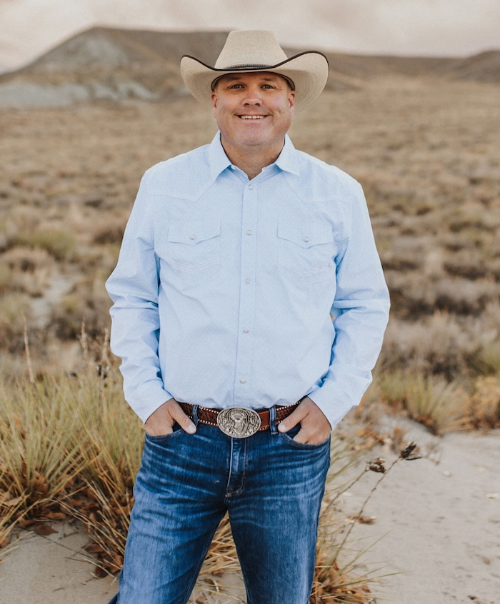

Website Builds
Modern, mobile-friendly websites that make your business look established and make it easy for customers to call, request a quote, or book a job.
Riverton, Wyoming digital marketing
Wildfire Digital Marketing is based in Riverton, Wyoming and helps contractors and small business owners look professional online, show up where local customers search, and turn more visitors into real leads.
Websites, Google visibility, lead capture, and follow-up working together.
Built for local service businesses
Whether you serve Riverton, Lander, Dubois, Shoshoni, or the surrounding Fremont County communities, your website and online presence should make it easy for people to trust you and contact you.
What Wildfire handles
Modern, mobile-friendly websites that make your business look established and make it easy for customers to call, request a quote, or book a job.
Landing pages, forms, call-focused CTAs, and campaigns built around real inquiries instead of vanity metrics.
Improve your visibility in local search with better service pages, local content, technical cleanup, and Google Business Profile support.
Listings, reviews, social basics, and brand consistency so your business looks professional everywhere customers check you out.
Proof from Wyoming businesses

Contractor website
Wildfire helped shape the brand presentation, logo direction, website design, local SEO structure, and social media pieces so customers could quickly understand services, trust the business, and call for an estimate.
Calls, leads, and overall business activity increased after the new website went live.

Statewide service business
Wildfire helped develop the logo and brand presentation, implement the website pieces, build local SEO around Wyoming service areas, and support social media so the business could grow beyond a single market.
The business now serves customers across Wyoming and has doubled year over year.
Who we help
Wildfire is built for owners who need their marketing to work without turning into another full-time job. You keep running the business. Wildfire handles the website, visibility, and lead flow.
Digital marketing, website design, and local SEO for Riverton, Lander, Dubois, Shoshoni, Hudson, and nearby communities.
Riverton SEO, Lander SEO, Dubois SEO, Shoshoni SEO, Google Business Profile optimization, and service-area visibility.
Contractors, home services, trades, professional services, local retailers, and owner-operated businesses.
The main objective

Local experience, real-world marketing
Wildfire Digital Marketing is led by Matt Childers, a Riverton, Wyoming-based marketer who helps businesses build professional websites, improve visibility, generate leads, and turn online attention into real conversations.
Matt has worked with large corporations and dealership groups, including Lithia Motors, Fremont Motor Company, and other major automotive groups, to drive marketing results, increase website traffic, and generate more leads.
You do not need more jargon, mystery reports, or slow agency runaround. You need practical marketing that makes your business easier to find, easier to trust, and easier to contact.
How it works
We look at your website, Google presence, competitors, and current lead flow.
We create or improve the pages, calls-to-action, local visibility, and tracking you need.
We keep refining the work so more local customers can find and contact you.
Ready to get found?
Tell Wildfire what kind of business you run, where you serve customers, and what you want more of: calls, leads, quote requests, bookings, or all of the above.
Prefer to talk now? Call 307-349-5030.